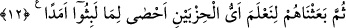

diğer şaşırtıcı mûcizelere nisbetle, şaşılacak bir şey olmadığını anlatması açısından
daha elverişlidir. Çünkü onların mağarada 309 sene uyutulmaları, Allah katında günün
bir bölümü gibidir.
12. Sonra da iki guruptan hangisinin kaldıkları müddeti daha iyi hesap edeceğini
bilelim diye onları uyandırdık.
“Sonra da” ileride geleceği gibi takdir ederek ve Allah’a havâle ederek onların
uyuma müddetleri hakkında ihtilaf eden “iki guruptan hangisinin kaldıkları müddeti
daha iyi hesap edeceğini bilelim diye onları” ölüme benzeyen o ağır uykularından
“uyandırdık.” Burada uyandırılmayı gerektirmesi, hayâtı tatil etmesi ve kişiyi cansız
varlık hâline getirmesi bakımından uykunun ölümün kardeşi olduğuna delil vardır.
Âyette “bilmek” müsebbibin isminin sebebe verilmesi yoluyla ‘sınamak’tan mecazdır.
Sınanan fiilin mutlaka meydana gelmesi, sınamanın olmazsa olmaz şartı değildir. Aksine
insanın yerine getirmekten âciz olduğu tekliflerde olduğu gibi, onun bunu yapmaktan âciz
olduğunu göstermek içindir. Nitekim “İbrahim: “Allah, güneşi doğudan getirir, sen
de onu batıdan getir!” deyince, inkâr eden o adam şaşırıp kaldı...” (el-Bakara,
2/258) âyetinde bu durum söz konusudur. Bu âyette kasdedilen de budur. Buna göre
âyetin anlamı “Biz onları dirilttik ki o iki gruba kendilerini sınayan kimsenin yaptığı
muâmeleyi yapalım” şeklinde olur.
İbn Abbas (r.anhümâ)’nın şöyle dediği rivâyet edilir: “Âyette bahsedilen iki
zümreden biri gençler, diğeri ise o şehri sıra ile idare eden yöneticilerdir.”
“İki guruptan hangisinin kaldıkları müddeti daha iyi hesap edeceği” bilinince
onların acziyeti meydana çıkar ve onlar bu konuyu her şeyi bilen, her şeyden haberdar
olan Allah’a bırakırlar. Onların hallerini, bedenlerini ve dinlerini korumak için Allah’ın
onlara ne yaptığını bilirler. Böylece Allah’ın sonsuz kudretine ve nihâyetsiz ilmine olan
kesin îmanları (yakîn) artar. Yeniden diriltilmede gizlenen sırrı görürler. Bu, onların
zamanındaki mü’minlere bir lütuf kâfirlere de apaçık bir âyet/delil olur.
Âyette kastedilen, hepsinin kendi başına Ashâb-ı Kehf’in mağarada ne kadar
uyutuldukları müddeti hesaplamaktan âciz olduğunu açıklamaktır. Yoksa her iki grup da
hesap etmekle birlikte tahminde bulunan iki gruptan üstün olanı ortaya koyup onu aşağı
olandan ayırmak değildir.
et-Te’vîlâtü’n-Necmiyye’de şöyle der: “(Rasûlüm)! Yoksa sen, bizim âyetlerimizden”
yâni kulumuza ihsânımızın âyetlerinden sadece “Kehf ve Rakîm sahiplerinin” hallerinin
“ibrete şâyan olduklarını mı sandın?” Burada işaret olunan Nebî (a.s.)’dır. Çünkü
senin ümmetin içinde halleri bunlardan daha ibrete şâyân olanlar vardır. Çünkü onların
içinde halvet ehli vardır. Onlar tefekkür ve tezekkür için O’nunla baş başa kalmayı